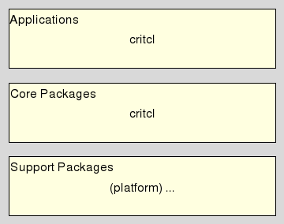

critcl_introduction - Introduction To CriTcl
Welcome to the C Runtime In Tcl, CriTcl for short, a system to build C extension packages for Tcl on the fly, from C code embedded within Tcl scripts, for all who wish to make their code go faster.
CriTcl started life as an experiment by Jean-Claude Wippler and was a self-contained Tcl package to build C code into a Tcl/Tk extension on the fly. It was somewhat inspired by Brian Ingerson's Inline for Perl, but is considerably more lightweight.
It is for the last 5% to 10% when pure Tcl, which does go a long way, is not sufficient anymore. I.e. for
when the last bits of performance are needed,
access to 3rd party libraries,
hiding critical pieces of your library or application, and
simply needing features provided only by C.
The following sections first reference a few related documents which may or may not be of interest to you, depending on if you are just a plain user of the system, trying to get and build/install it, or are going deep into the internals for either edification or modification.
This is followed by an introduction to the modes of operation supported by the system, and its general architecture as seen by a user.
CriTcl can be used in three different modes of operation, called
Compile & Run, and
Generate TEA Package
Of these three Compile & Run came first and is the default when using the package directly. In that case the package collects the C fragments, builds them as needed, and caches the results for quick reuse when the same code is used in the future again.
The second mode, Generate Package, was introduced to enable the creation of (prebuilt) deliverable packages which do not depend on the existence of a build system, i.e. C compiler, on the target machine. This was originally done through the experimental Critbind tool, and is now handled by the CriTcl Application, also named critcl.
Newly introduced with Critcl version 3 is Generate TEA Package. This mode constructs a directory hierarchy from the package which can later be built like a regular TEA package, i.e. using
.../configure --prefix ... make all isntall
The system consists of two main layers, as seen in the figure below, plus a support layer containing general packages the system uses during operation.

At the top we have an application built on top of the core packages, providing command line access to the second and third usage modes, i.e. Generate Package and Generate TEA Package.
Below that is the core package providing the essential functionality of the system, plus various utility packages which make common tasks more convenient.
Lastly a layer of supporting packages, mostly external to critcl.
For this pure-Tcl package to be fast users should get one of several possible accelerator packages:
tcllibc
Trf
md5c
The sources of Critcl, should you have gotten them, contain several larger examples show-casing various aspects of the system. These demonstration packages can all be found in the sub-directory "examples/" of the sources.
Lots of smaller examples can be found in the document Using CriTcl, an introduction to Critcl by way of a of examples. These focus more on specific critcl commands than the overall picture shown by the large examples mentioned in the previous paragraph.
Fixed bug where critcl::tsources interpreted relative paths as relative to the current working directory instead of relative to the ".critcl" file using the command, as all other commands of this type do.
Fixed internals, preventing information collected for multiple ".critcl" files to leak between them. Notably, critcl::tk is not a global configuration option anymore.
Fixed the command critcl::license to be a null-operation in mode "compile & run", instead of throwing an error.
Fixed the critcl application's interference with the "compile & run" result cache in -pkg mode by having it use a wholly separate (and by default transient) directory for that mode.
Fixed bug where changes to a ".critcl" file did not result in a rebuild for mode "compile & run". All relevant API commands now ensure UUID changes.
Fixed bug in the backend handling of critcl::debug where the companion c-sources of a ".critcl" file were not compiled with debug options, although the ".critcl" file was.
Fixed bug in critcl::debug which prevented recognition of mode "all" when it was not the first argument to the command.
Fixed bug in "preload.c" preventing its compilation on non-windows platforms.
Fixed long-standing bug in the handling of namespace qualifiers in the command name argument of critcl::cproc and critcl::ccommand. It is now possible to specify a fully qualified command name without issues.
Extended/reworked critcl::tsources to be the canonical way of declaring ".tcl" companion files even for mode "compile & run".
Extended/reworked critcl::tsources to allow the use of a ".critcl" file as its own Tcl companion file.
Extended critcl::framework to internally check for OS X build target, and to ignore the declaration if its not.
Extended critcl::failed to be callable more than once in a ".critcl" file. The first call forces the build, if it was not done already, to get the result. Further calls return the cached result of the first call.
Extended the handling of environment variable CC in the code determining the compiler to use to deal with (i.e. remove) paths to the compiler, compiler file extensions, and compiler options specified after the compiler itself, leaving only the bare name of the compiler.
Extended the code handling the search for preloaded libraries to print the paths it searched, making debugging of a search failure easier.
A new command critcl::tcl can be used to declare the version of Tcl minimally needed to build and run the ".critcl" file and package. Defaults to 8.4 if not declared. Extended critcl to have the stubs and headers for all of Tcl 8.4, 8.5, and 8.6.
A new command critcl::load forces the build and load of a ".critcl" file. This is the official way for overriding critcl's default lazy-build-&-load-on-demand scheme for mode "compile & run".
Note that after using critcl::load / critcl::failed in a ".critcl" file it is not possible to use critcl commands in that file anymore. Doing so will throw an error.
Extended the generation of '#line' pragmas to use info frame (if available) to provide the C compiler with exact line numbers into the ".critcl" file for the reporting of warnings and errors.
Extended critcl::check with logging to help with debugging build-time checks of the environment, plus an additional optional argument to provide labeling.
Added a new command critcl::checklink which not only tries to check the environment via compiling the code, but also its linkability.
Added a new command critcl::msg for messaging, like command critcl::error is for error reporting. Likewise this is a hook a user of the package is allowed to override. The default implementation, used by mode compile & run does nothing. The implementation for mode generate package prints the message to stdout.
Envisioned use is for the reporting of results determined by critcl::check and critcl::checklink during building, to help with debugging when something goes wrong with a check.
Exposed the argument processing internals of critcl::proc for use by advanced users. The new commands are
critcl::argnames
critcl::argcnames
critcl::argcsignature
critcl::argvardecls
critcl::argconversion
Please see section Advanced Embedded C Code of the critcl package documentation for details.
Extended the critcl package to intercept package provide and record the file -> package name mapping. Plus other internal changes now allow the use of namespaced package names while still using proper path names and init function.
Dropped the unused commands critcl::optimize and critcl::include.
Dropped -lib mode from the critcl application.
Dropped remnants of support for Tcl 8.3 and before.
The command critcl::platform was deprecated in version 2.1, superceded by critcl::targetplatform, yet kept for compatibility. Now it has been removed.
The command critcl::compiled was kept with in version 2.1 with semantics in contradiction to its, for compatibility. This contradiction has been removed, changing the visible semantics of the command to be in line with its name.
The change to version 3 became necessary because of the two incompatible visible changes above.
Extended the application package with code handling a new option -tea. Specifying this option invokes a special mode where critcl generates a TEA package, i.e. wraps the input into a directory hierarchy and support files which provide it TEA-lookalike buildsystem.
This new option, and -pkg, exclude each other. If both are specified the last used option takes precedence.
The generated package directory hierarchy is mostly self-contained, but not fully. It requires not only a working installation of Tcl, but also working installations of the packages md5 and cmdline. Both of these are provided by the Tcllib bundle. Not required, but recommended to have installed are any of the packages which can accelerate md5's operation, i.e. cryptkit, tcllibc, or Trf.
Extended the critcl package with a new command critcl::scan taking the path to a ".critcl" file, statically scanning it, and returning license, version, a list of its companion files, list of imported APIs, and list of developer-specified custom configuration options. This data is the foundation for the TEA wrapping described above.
Note that this is a static scan. While the other build modes can (must) execute the ".critcl" file and make platform-specific decisions regarding the assembled C code, companion files, etc. the TEA wrap mode is not in a position to make platform-specific decisions. It has to wrap everything which might conceivably be needed when actually building. Hence the static scan. This has however its own set of problems, namely the inability to figure out any dynamic construction of companion file paths, at least on its own. Thus:
Extended the API used by critcl-based packages with the command critcl::owns. While this command is ignored by the regular build modes the static scanner described above takes its arguments as the names of companion files which have to be wrapped into the TEA package and could not be figured by the scanner otherwise, like because of dynamic paths to critcl::tsources, critcl::csources, getting sourced directly, or simply being adjunct datafiles.
Extended the API used by critcl-based packages with the command critcl::api for the management of stubs tables, be it their use, and/or declaration and export.
Please see section Stubs Table Management of the critcl package documentation for details.
Extended the API used by critcl-based packages with the command critcl::userconfig for the management of developer-specified custom configuration options, be it their use and/or declaration.
Please see section Custom Build Configuration of the critcl package documentation for details.
Extended the API used by critcl-based packages with the commands critcl::description, critcl::summary, critcl::subject, critcl::meta, and critcl::buildrequirement for the declaration of TEApot meta data for/about the package.
Please see section Package Meta Data of the critcl package documentation for details.
Bugfixes all around. In detail:
Fixed recording of Tcl version requirements. Keep package name and version together, unbreaking generated meta data and generated package load command.
Fixed the build scripts: When installing, or wrapping for TEA, generate any missing directories
Modified the build scripts to properly exit the application when the window of their GUI is closed through the (X) button.
Removed an 8.5-ism (open wb) which had slipped into the main build script.
Modified the example build scripts to separate the output for the different examples (and packages) by adding empty lines.
stack::c example bugfix: Include API declarations for use in the companion files.
Extended the documentation: Noted the need for a working installation of a C compiler.
Extended the Windows target definitions and code to handle the manifest files used by modern MS development environments. Note that this code handles both possibilities, environment using manifests, and (old(er)) environments without.
Extended the Windows 64bit target definitions and code to auto-detect the need for the helper library "bufferoverflowU.lib" and reconfigure the compile and link commands appropriately. We assume that the library must be linked when present. This should be no harm if the library is present, yet not needed. Just superfluous. We search for the library in the paths specified by the environment variable LIB.
Fixed issue in compile-and-run mode where commands put into the auto_index are not found by Tcl's [unknown] command.
Fixed an array key mismatch breaking usage of client data and delete function for procedure. Reported by Jos DeCoster, with patch.
Implemented a command line option -L, an equivalent of option -I, just for library search paths.
Fixed github issues 5 and 8. Working around a missing variable ::errorInfo. It should always be present, however there seem to be revisions of Tcl around which violate this assumption.
Fixed github issues 5 and 8, for the example build.tcl scripts. Working around a missing variable ::errorInfo. It should always be present, however there seem to be revisions of Tcl around which violate this assumption.
Fixed generation of the package's initname when the incoming code is read from stdin and has no proper path.
Fixed github issue 11. Now using /LIBPATH instead of -L on Windows (libinclude configuration setting).
Extended critcl to handle -l:path format of -l options. GNU ld 2.22+ handles this by searching for the path as is. Good when specifying static libraries, as plain -l looks for shared libraries in preference over static. critcl handles it now, as older GNU ld's do not understand it, nor the various vendor-specific linkers.
Fixed github issue #12. Critcl now determines the version of MSVC in use and uses it to switch between various link debug options. Simplified the handling of bufferoverflowU.lib also, making use of the same mechanism and collapsing the two configurations sections we had back into one.
Reworked the insertion of #line pragmas into the generated C code to avoid limitations on the line number argument imposed by various compilers, and be more accurate.
Modified argument processing. Option -libdir now also implies -L for its argument.
Extended handling of option -show (critcl::showconfig) to list the path of the configuration file the data is coming from. Good for debugging configuration processing.
Extended the build script with targets to regenerate the embedded documentation, and diagrams, and to generate a release.
Fixed bug in the new code for #line pragmas triggered when specifying C code without leading whitespace.
Extended the documentation to have manpages for the license, source retrieval, installer, and developer's guides.
Extended the API for handling TEApot metadata. Added the command critcl::meta? to query the stored information. Main use currently envisioned is retrieval of the current package's name by utility command, for use in constructed names. This particular information is always available due to the static scan of the package file on execution of the first critcl command.
Extended the API with a command, critcl::name2c exposing the process of converting a Tcl name into base name, namespace, and C namespace.
Extended the API with a command, critcl::source executing critcl commands in a separate file in the context of the current file, allowing for easier management of larger bodies of code by splitting it up.
Jean Claude Wippler, Steve Landers, Andreas Kupries
This document, and the package it describes, will undoubtedly contain bugs and other problems. Please report such at https://github.com/jcw/critcl. Please also report any ideas for enhancements you may have for either package and/or documentation.
C code, Embedded C Code, code generator, compile & run, compiler, dynamic code generation, dynamic compilation, generate package, linker, on demand compilation, on-the-fly compilation
Glueing/Embedded C code
Copyright © Jean-Claude Wippler
Copyright © Steve Landers
Copyright © 2011 Andreas Kupries